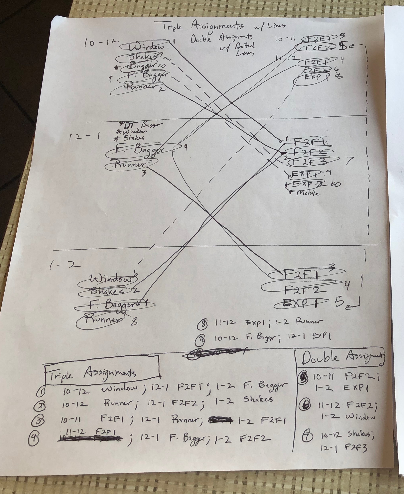

Design

The main problem is figuring out where to assign people so that the whole thing is fairly balanced.
What I realized was that myself and others usually have patterns we stick to when doing the book.
"So-and-so can do 1-2 Face-to-Face since they've only been outside once, and it was 10-11."
Those rules I listed before are the reason why. And when I considered how I do the book, I start with the positions
most restricted-
- If someone leaves at 2:30, they can't count drawers. Need to be here til 3-3:30 for that.
-
The person counting drawers needs to stay later. It would also help if its someone who cant restock.
People start restocking at 1pm, and people start drawers at 2-2:30pm. We are always trying to conserve personnel resources.
The store is too busy not to do so.
-
So the person who does drawers can't hold a 2-3 DT position, so lets put them in spot 12-1 or 1-2. The restocker can't hold
a 1-2 position, so lets put them in a 12-1 spot.
- etc.
And so we all do the book.
When I decided to start the project, it was clear that the primary issue was the assignments. I decided to create 13 positions, each of which would
be mapped across the the 3 primary hour blocks - 10-12, 12-1, 1-2. The breakfast hours of 7-8, 8-10 are treated somewhat differently because people are just getting in
or going on break during this time. As such, the book is rarely followed closely during these hours and I did not connect the two in design or application.
So breakfast positions don't factor in to consideration when assigning 10-2 spots for my script. Below are the position maps I made. After using Google Sheets to
fine tune the assignments, I wrote the script.
I've used this to do the book for several of my days (we are each assigned days to do the book and run the shift), and it helped me realize an important design flaw:
normal shifts are scheduled for 13, but sometimes daily sales projections limit the scheduler to 12. When thats the case, it changes how we do the book.
I realized this on a Saturday, when for whatever reason we were short handed. I went back to my position mappings and designed it with a 12-person shift in mind.
That way, if there is more, then there are more options from the Unassigned column for the user to choose from. And if the shift is short handed, the Shift Scheduler
takes that into account as default.
Postion Mapping
1 Front: 10-12 unassigned, 12-1 unassigned, 1-2 Front Bagger
2 DT: 10-11 F2F1, 12-1 unassigned, 1-2 Window
3 Catering: 10-12 unassigned, 12-1 Mobile Runner, 1-2 F2F2
4 No F2F 1: all unassigned
5 No F2F 2: 1-2 DT bagger, Count Drawers
6 DT SHakes 12-1: 10-11 Restocker, 11-12 F2F1, 12-1 DT Shakes, 1-2 unassigned
7 Team Leader 1: 10-12 Front Bagger, 12-1 F2F1, 1-2 Runner
8 Team Leader 2: 10-12 DT Bagger, 12-1 F2F3, 1-2 Restocker2
9 Team Member 1: 10-12 Window, 12-1 F2F2, 1-2 Shakes
10 Team Member 2: 10-11 F2F2, 12-1 unassigned, 1-2 unassigned
11 Team Member 3: 11-12 F2F2, 12-1 Runner, 1-2 Expediter
12 Team Member 4: 10-12 Shakes, 12-1 F2F1, 1-2 Restocker1
13 Team Member 5: 11-12 Expediter, 12-1 unassigned, 1-2 F2F1
Opener: 7-8 Front Bagger, 8-10 unassigned
Opener, Manager: 7-8 DT Bagger, 8-10 unassigned
Team Member 1 at 7: 7-8 Shakes, 8-10 Window
Team Member 2 at 7: 7-8 Window, 8-10 unassigned
Team Member 3 at 7: unassigned
Team Member 1 at 8: 8-10 F2F
Team Member 2 at 8: 8-10 Front Bagger
Team Member 3 at 8: 8-9 SHakes, 9-10 F2F